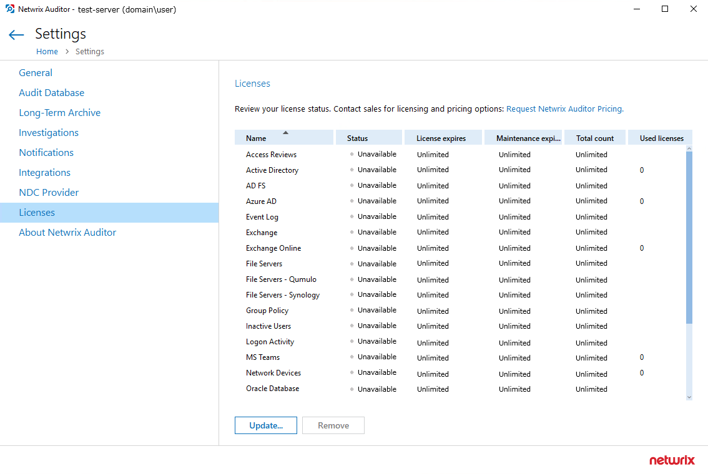
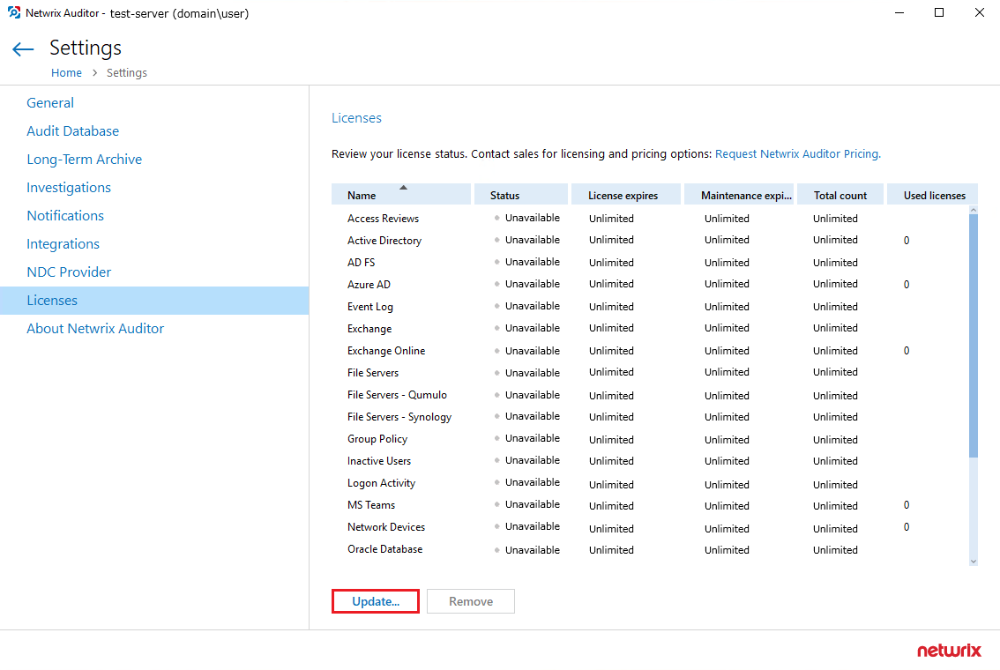

Symptom
- Netwrix Auditor stops working after the Windows version on the Netwrix host server was upgraded.
- Monitoring plans are disabled.
-
License status for a product states Unavailable.

Cause
Windows Setup suite overwrites license-related settings of Netwrix Auditor during the
upgrade procedure.
Solution
For trial or normal licenses
Re-apply your license:
-
In the main Netwrix Audior screen, go to Settings > Licenses and
click Update.
 - Navigate to your .lic file and select the file.
- Click Open.
For Netwrix Auditor Free Community Edition
Reinstall your Netwrix Auditor instance. For additional information on Auditor
uninstallation process, refer to the following article:
Uninstall Netwrix Auditor.